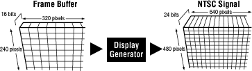
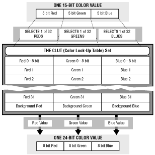
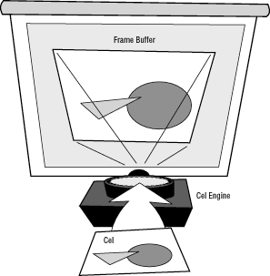
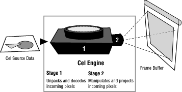

The 3DO hardware has three basic graphics systems that you can program:
The display generator: turns pixels stored in a frame buffer into a color NTSC signal.
The cel engine:projects color bitmap images into the frame buffer. It moves, scales, and merges the images at your option.
The SPORT bus:Very quickly copies large blocks of data within VRAM.
Because the cel engine and SPORT bus are designed to write to pixels in the frame buffer, much of what they do makes no sense until you understand how the display generator turns frame buffer pixels into an NTSC display.
The Display Generator
If you look at the display generator as a black box with input and
output (as shown in Figure 1), it's a simple processor. A bitmap image stored in a frame buffer goes in and an NTSC signal comes out that puts the image on a television screen. If you look a little closer at the input and output, though, you'll notice some strange discrepancies.

Figure 1: A simple view of the display generator.
The input image (in a normal 3DO graphics display) is stored in a frame buffer that measures 320 pixels wide by 240 pixels high. Each pixel is 16 bits deep, with 15 bits to specifying color. That 15-bit color value can specify a total of 32,768 possible colors.
The display generator reads the frame buffer 30 times a second and puts out an NTSC signal of 30 frames per second. Each output frame has a resolution of 640 pixels wide and 480 pixels high-four times the resolution of the frame buffer. Each pixel in the output signal contains a 24-bit color value, a palette that offers over 16 million possible colors-512 times the available color values in the frame buffer.
Besides increasing the resolution and color depth of a frame buffer image, the display generator can also lay the frame buffer image over a second image such as a digital image from a source like a frame grabber. The background image shows through the frame buffer image wherever the frame buffer image contains a pixel designated as a background pixel.
To understand how the display generator increases resolution and color depth, and then adds a background image showing through background pixels, let's first look at how the display generator handles color.
Color
To increase color depth, the display generator contains sets of color lookup tables (CLUTs). A CLUT set uses the 15-bit color value stored in each frame pixel as a reference to a 24-bit color value stored in the CLUT set's registers. If you're familiar with traditional color lookup schemes, you'll find a major difference in the way 3DO's CLUT sets handle colors.
In a traditional color lookup scheme, a single CLUT provides enough registers for each possible pixel value. For example, an 8-bit deep frame buffer traditionally requires a CLUT of 256 registers, one for each possible 8-bit color value. Each register stores a 24-bit value that is put out each time a pixel color value accesses the register.
If 3DO graphics hardware used the traditional scheme, it would need a CLUT with 32,768 color registers, each holding a separate 24-bit color value-quite an array. To reduce the number of color registers, 3DO hardware reads each 15-bit color value as three color components: a 5-bit red value, a 5-bit green value, and a 5-bit blue value. It then provides a set of three CLUTs: one CLUT for red, one CLUT for green, and one CLUT for blue. Each CLUT contains 32 standard registers; each register contains an 8-bit red, green, or blue value.
When the display generator processes a pixel as shown in Figure 2, it reads the 5-bit red value, finds the corresponding register in the red CLUT, and puts out an 8-bit value in its place. It simultaneously does the same for the 5-bit green and
5-bit blue values, and merges the three 8-bit output values into a single 24-bit RGB (red, green, blue) color value. That's how the 15-bit color image in the frame buffer becomes the 24-bit color image that comes out of the display generator.

Figure 2: Color look-up table (CLUT) set.
To show a second image in the background of a frame buffer image, 3DO hardware uses a special type of pixel with an RGB value of 000 which is declared a background pixel. You might think that the 000 value goes straight to the three 0 registers of the red, green, and blue CLUTs-but it doesn't. A background pixel flag tells the CLUT set to fill it in with a special background color contained in special background registers of the CLUTs. That background pixel can then optionally be replaced with a 24-bit pixel from a digital background image. After it's converted into an analog NTSC signal, it can optionally be substituted with a GenLocked video signal.
Resolution
The 320-by-240 pixel resolution provided by the frame buffer is designed
to match the response characteristics of the NTSC signal-specifically,
the chroma response, which changes relatively slowly. The intensity response,
which is twice the speed of chroma, provides a resolution four times as great
as chroma-as long as the color doesn't change too radically from pixel to pixel.
To take advantage of the higher resolution possible with intensity, 3DO provides
the option of pixel weighting, a process that gives each 320-by-240 pixel
added weight in one of its four corners as shown in Figure 3. The added weight is called a cornerweight.
Figure 3: Pixel weighting.
Although each pixel can have only one cornerweight, the cornerweight can change position from pixel to pixel to provide an outlined image definition in
640-by-480 space. The display generator uses that outlined definition to sharpen the image that it puts out.
Before the display generator can use cornerweight information, it must break up each frame pixel into four subpixels. This division creates an image in a 640-by-480 grid. If interpolation is turned off, each of the four newly created subpixels takes the same color as the parent pixel, so the increase in resolution isn't apparent. If pixel weighting is turned on, the display generator smoothly grades colors across subpixels, using the cornerweight positions in adjacent pixels as color sources. The effect is a sophisticated form of anti-aliasing that produces a sharp image without the jaggies evident in a 320-by-240 image.
When interpolation is turned on, every pixel coming into the interpolator has a cornerweight. The cornerweight position can be a constant so that each pixel is weighted in the same corner, or the cornerweight position can be specified by each pixel so the position changes from pixel to pixel. To fully specify a cornerweight position, a pixel needs two bits-a challenge if 15 of its 16 bits are already used for a color value. To get these two bits, the pixel uses its unused bit for one, and then steals the low-order blue bit for the other. You'll find more details about a pixel's cornerweight bits later in this chapter.
When interpolation is turned off, the cornerweight position isn't considered. The pixels aren't interpolated and are more sharply defined-an effect known affectionately as "crispy pixels."
Controlling the Display Generator
The display generator takes its orders from the VDLP (video display list processor), a graphics folio component. The VDLP turns pixel weighting on and off, sets CLUT register contents, controls background pixel handling, and does much more. It does so by reading a VDL (video display list) that contains display control commands. Each command is tied to a single display line, so the command executes just before that display line is rendered. This allows the VDLP to perform gymnastics such as completely changing the color palette contained in the CLUT set from line to line of the display. (You'll find more detailed information about the VDLP in "Understanding the Display Generator" and "Using the Display Generator.)
The Cel Engine
The cel engine isn't as straightforward as the display generator and
to comprehend it takes some time. The easiest route to understanding the
cel engine is to think of the it as a digital slide projector as shown in
Figure 4. The slide it projects is a cel-a bitmapped image stored in RAM. The screen on which it projects the cel is the frame buffer.

Figure 4: A cel engine as a digital slide projector.
A cel can be a large, complex image or it can be very simple. For example, a cel can use 15-bit color values for as many as 32,768 colors, or it can use 1-bit color values for as few as two colors. It can be larger than the frame buffer or it can be as small as a single pixel. Its bitmap can be compressed or uncompressed, coded or uncoded, stable or constantly changing. The cel engine can handle all these different cel types; learning the particulars of each type is what makes the cel engine a challenging study.
When the cel engine projects a cel into the frame buffer, it has many powerful options. Among them, it can scale the cel, expanding or shrinking it, or it can stretch the cel into an irregularly shaped quadrilateral with a 3-D feel. It can place the cel in different locations in the frame buffer, and with a regular succession of locations, smoothly move the cel across the frame buffer. The cel engine can change the look of the pixels within the cel, increasing or decreasing their color intensity for interactive lighting effects and merge them with the existing image in the frame buffer for translucent effects such as colored glass. The cel engine can also choose not to project the pixels at all, but merely alter the frame buffer pixels where the cel falls to create shadows and similar effects.
The cel engine brings considerable power to cel projection: it can render nine million pixels nonstop every second. That's 300,000 pixels every frame (which occur 30 times a second), which is four times the number of pixels in each frame. The cel engine can also project many cels at once; the maximum number is determined by the size and complexity of the cels and the minimum speed you want from the cel engine.
Types of Cels
A cel image can be used for many different purposes. It can be a small simple moving object, such as a distant airplane in a flight game; it can be a large, complex image such as a full-size digitized speaking face; or it may be anything between. Each use has its own optimal cel data type. Some uses require full color accuracy with 15-bit color values; others require only simple 2-bit color values. Some use large and stable bitmaps; others change their bitmaps constantly for animation and need simple, small bitmaps to keep up the animation speed. Still others require special shading data for each cel pixel.
3DO hardware works with the following two cel data types which allow reduced pixel data size and increased information capacity per pixel:
Coded cel data types, use color indirection and other schemes which allow more data to be included in each cel pixel. Coded cels can use 1, 2, 4, 6, 8, or 16 bits per pixel. Each coded pixel can include color and cornerweight information and may also include shading information. Because of color indirection, coded cels are limited to 32 primary colors. (In some cases, shading can increase the number of colors available.)
Uncoded, contains pixels which carry data that goes directly into the frame buffer. Uncoded cels use 8 or 16 bits per pixel. The 8-bit uncoded pixels carry only the most significant color bits, explained later in the chapter, and are "unfolded" to 16 bits; 16-bit uncoded pixels carry the exact value that goes into the frame buffer. The 16-bit uncoded cels can specify the same 32,768 colors used in the frame buffer.
You can use a coded or uncoded cel depending on what data you want to include for each pixel and on how many bits you want to dedicate to each pixel. You don't need to consider processing speed: the cel engine processes coded and uncoded cels equally quickly-it devotes only a single clock cycle per pixel. In fact, coded cels can sometimes have a shorter overall processing time than uncoded cels because they need fewer bus cycles to fetch the source data to the cel engine.
Both coded and uncoded cel source data can be compressed to further reduce the size of the data. The compression options include:
Packed, which reduces runs of identical pixels to a description of a few bytes, compressing the size of the source data considerably.
Unpacked, which expects each pixel to be fully described with the appropriate number of bits per pixel.
Once the cel engine receives cel source data, it can process packed and unpacked cels at an equal pace, so at first it seems there's no real advantage to unpacked data, except that you don't have to pack it. Why not always pack the data and save the bytes? The true advantage of unpacked cel data is that it can come from other existing sources, such as the frame buffer or another cel, and it can be a subset of that source data, for example, a small subrectangle of any part of the image in the frame buffer.
Note: Under some circumstances, a packed cel can take more memory than if it weren't packed. This is due to the extra overhead with packed data.
Processing Cels
If you look at the cel engine in more detail, you see a two-stage black box
as shown in Figure 5. The first stage accepts, unpacks, and decodes cel source data. It then sends the results to the second stage, which processes that data and projects it into the frame buffer.

Figure 5: Unpacking and decoding source data.
The second stage's main job is to take 15-bit color values from the first stage and manipulate those values for special effects before projecting them into the frame buffer. Those effects fall into two categories:
Scaling the source color, where the incoming pixel color values are increased or decreased to brighten or darken the pixels.
Merging incoming color data with data from a second source, where the incoming pixel color values are added to or subtracted from pixel color values from another source (such as underlying pixels in the frame buffer), and optionally divided by 2 to average the color.
These effects are highly controllable and can vary considerably depending on how the cel engine processor is set and on what sources come into the processor. For example, the incoming pixels usually come from the cel source data (after unpacking and decoding), but they can also come from the frame buffer directly beneath the cel's projection position. This second option modifies the frame buffer image in the shape of the cel's pixel layout, creating a shadow, spotlight, or a rippling effect. Another option allows the underlying frame buffer pixels to be used as a secondary source for merging with cel pixels so the cel appears translucent over the frame buffer image. This creates an effect such as looking through a tinted car window or through a stained glass window.
The combinations of inputs and processing options create a mind-boggling set of alternatives and, of course, make the cel engine an even more challenging study. You can read all about the details in "Understanding the Cel Engine and SPORT."
Controlling the Cel Engine
To create a cel that runs through the cel engine, you need three components:
The source data,which contains data for each cel pixel.
The cel control block (CCB), which contains information that controls the cel projection: the cel's projection location in the frame buffer, the size and shape of the projection quadrilateral, a pointer to the cel's source data, values for fixed scaling, values for a fixed cornerweight position, links to other cels, and other information, much of it optional.
The preamble, which identifies the type of data in the source data: packed or unpacked, coded or uncoded, the number of bits per pixel, and more. The preamble is usually at the beginning of the source data, but can be included in the CCB if it points to different source data locations that contain the same type of data.
The preamble tells the cel engine how to process the cel's source data-whether to unpack the data or not, how to decode the data, and more. The CCB controls much of the rest of the cel engine's operation, including processing options, internal cel animation (a task can change CCB contents to flip through different source data), cel motion through the buffer, and methods of passing on cornerweight data. Most cel programming involves setting up the preamble and source data, and then creating a CCB that projects the data into the frame buffer the way you want it.
The SPORT Bus
The analogy of the cel engine as a projector that projects onto/into the frame buffer fails in one respect: a real projector can move from place to place without affecting the background on which it's projecting. The cel engine projector writes directly into the frame buffer and leaves behind a series of images as it moves its projection across the buffer. To restore the frame buffer background as a cel projection moves across it, 3DO hardware offers the SPORT bus.
SPORT is an acronym for Serial PORT and is an added data bus for RAM chips in VRAM. The SPORT bus allows quick reads and writes of one or more pages of VRAM into one or more other pages of VRAM-which, if those pages contain a bitmapped image, can quickly copy an image from one section of VRAM into another.
Frame Background Restoration
3DO hardware uses the SPORT bus to quickly restore a background image in the frame buffer at the beginning of each frame, before the cel engine projects cels over the background. To do so, the background image is stored outside the frame buffer as a bitmap in VRAM. The SPORT bus copies the VRAM image directly into the frame buffer very quickly, allowing time for the cel engine to project cels into the background before the frame is sent off to the display processor. When one frame finishes, the SPORT bus again copies the background image into the frame buffer for the beginning of the next frame.
By constantly restoring the background in the frame buffer at the beginning of each frame, the SPORT bus effectively turns the cel engine into a true projector that leaves no traces behind as it moves a cel across the frame buffer in a series of frames.